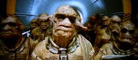
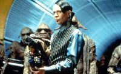
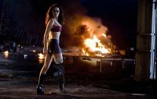
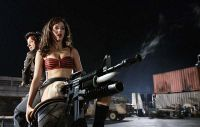
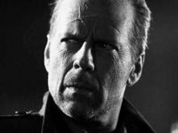
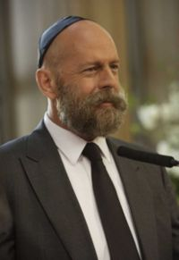

Брюс Уиллис
Брюс Уиллис — немецкий расовый актёр, сценарист и продюсер. Лысый, периодический символ боевиков Голливуда, заслуженно пользующийся искренней любовью зрителей. Последняя надежда Америки в случае внезапного конца света
Фильмы
Хитрый взгляд в стиле «Как же вы меня все уже...» и saving a day только потому, что жизнь заставляет. Так-то всё нафиг не упало и отстаньте все от меня — но увы. Получает по лицу, как Сталлоне, но с противоположным эффектом: от пачки пиздюлей начинает драться лучше и энергичней. Возможно потому, что обычно с бодуна и пиздюли его малость приводят в чувства.
В последнее время всё чаще играет старых пердунов. Регулярно спасает мир. Персонажи доставляют отжыгами а-ля «Шёл-шёл, споткнулся, упал и случайно воткнул член в мою жену», «Ещё раз ударишь, и я тебя убью», «Поставь мне рэп и я заплАчу», «Вода мокрое, небо голубое, а описание текущего фейла ГГ... Жизнь — дерьмо» или вопросом «В челюсть или под дых?» (и в результате — туда и туда). Ещё в «Последнем Бойскауте» наличествует прекрасная фраза: «Сара, ты лживая сука и я должен плюнуть тебе в лицо». В контексте финала фильма — звучит как признание в любви.
Крепкий орешек
Наиболее яркой в фильмографии Уиллиса считается серия Крепкий орешек «Die Hard», тяжело, но достойно переведённая нашими Володарскими, как «Крепкий орешек». Каждый фильм серии является хорошим, годным, весьма высокобюджетным боевиком (что заметно по масштабам разрушений, коих предостаточно) и, вкратце, сводится к такой схеме: германского или американского происхождения жулики (никаких Львов Андроповых замечено не было) замышляют Зловещее Преступление и, успешно выполнив первую часть своего хитрого плана, начинают активно угрожать всему миру расстрелом людей и взрывом самолётов.
Случайно же (исключение — третья часть, где сценарий изначаль писался под очередное «Смертельное оружие») оказавшийся рядом Брюс «МакКлейн» Уиллис в порядке самообороны, или просто во имя Великого Мохнатого Бобра, начинает этих террористов планомерно наказывать и, не смотря на то, что каждый хитрый план впоследствии оказывается ещё более хитрым, чем казалось вначале, таки мочит их окончательно: главный злодей и его подручные оказываются жестоко расстреляны / повешены / взорваны / выброшены из окна (что обычно сопровождается знаменитым Уиллисовским Yippee-ki-yay, motherfucker главный герой мирится с какой-нибудь дочкой / женой, Happy End.
Всё же, вкратце опишем все четыре фильма по отдельности:
Крепкий орешек-1. В самом первом фильме (и кстати, лучшем за всю серию), выпущенным в прокат в 1988 году, полицейский Джон МакКлэйн в одиночку ведёт схватку с бандой аполитичных ограбителей, ловко притворившихся политическими террористами, обманув туповатых представителей спецслужб и, заодно, МакКормака в суперсовременном небоскрёбе Лос-Анджелеса. Залезает на крышу гигантского небоскрёба, зависает в шахте лифта, бегает босиком по битым стёклам и т. д. и т. п. Фильм рекомендуется к просмотру всем инженерам-строителям, дабы оценить, как строили в Америке ещё в 80-х, ибо инженерная начинка небоскрёба показана очень хорошо.
Фильм имел большой успех отчасти и потому, что ломал все законы жанра «боевик». Во-первых, герой — не Шварцнеггер и не Сталлоне, а обычный полицейский с обычным именем Джон Макклейн и с обычной лысиной (только с третьей части) на голове. Во-вторых, он не спасает весь мир, а лишь спасает свою жену, попавшую в заложники. В-третьих, злодей не собирается захватить весь мир, ему всего-то нужны деньги (в отличие от ГлавЗлодея из «Крепкого орешка-4» с манией величия). Есть ещё несколько отличий, но и этого достаточно, чтобы фильм стал Win.
Также Педивикия сообщает, что первый фильм изначально планировался, как продолжение «Коммандо».
Крепкий орешек-2. Продолжение редко бывает на уровне первого фильма. Это правило подтверждает второй «Орешек». Хотя очередная история противостояния неистового и честного полицейского Джона МакКлейна могущественной банде террористов внешне чрезвычайно эффектна, насыщена пиротехникой, погонями и стрельбой и наверняка понравится всем тем, кто любит героев, не тонущих в воде и не горящих в огне.
Крепкий орешек-3. Третий и самый слабый / сильный фильм из всей четвёртки повествует нам об том что террорист Саймон (Джереми Айронс), виртуозно устраивающий взрывы, заставляет героя — полицейского играть в смертельную игру. Ставка — город Нью-Йорк. МакКлэйн вынужден метаться по городу, следуя телефонным указаниям Саймона, готового разнести пол — Нью-Йорка за малейшее отклонение от его требований. И в то время, как вся полиция города занята поисками террористов, преступники похищают золотой запас Национального банка США.
Крепкий орешек-4. Появился только через 12 лет после третьего. Многие перед выходом опасались за качество фильма, и оказалось, что их опасения были ненапрасны. Этот фильм очень сильно уступает по винрарности первой части. Итак, по сюжету, однажды США подверглись атаке злобных интернет-террористов. Они начали со взлома сети дорожных светофоров, перешли к инсценированному телевизионному взрыву Капитолия, а закончили атакой на крупнейшие банки. Злобные хакеры решили ввергнуть Штаты в Средневековье, изничтожив всю электронную инфраструктуру страны.
Наш же нынешний Джон МакКлэйн — завсегдатай общества анонимных алкоголиков. С женой он развёлся, и теперь зарабатывает себе на виски поимкой хакеров, то есть выполнял поручение ФБР — установить, задержать и доставить. С помощью недавно изловленного хакера Мэтта Фаррелла, которого играет Джастин Лонг Бравый МакКлэйн вновь надаёт злодеям по рогам. Расхуячить вертолёт полицейской тарантайкой, а расовый пиндосский F-35 тягачом — это, конечно, малёхо мимо реализму пошло. Можно, конечно, понастальгировать по старым временам, когда у МакКлэйна ещё были волосы, а сама гамма оттенков картины фильма не была зеленовато-стальной, а была тёплой. Расквашенная физиономия Джона, его циничные (но уже с бородцой) шуточки и его дочери с её «Папа, тут их всего 9000 ...» (только чтобы подчеркнуть насколько она брутальна), массовые разрушения и шикарная, долгая драка МакКлэйна с какой-то тёткой, гарантированы.
Пятый элемент

Мангалоры. Злые и тупые как положено.

Зорг, злобный олигарх 23 века.
Поскольку фильм на экранах зомбоящиков появляется также часто, как и «С лёгким паром», описывать его сюжет довольно-таки бессмысленно. К тому же, он подробно изложен в винрарной пародии от Куваева. И тем не менее:
Каждые пять тысяч лет как обычно открываются двери между измерениями и тёмные силы по привычке и старой доброй традиции начинают пытаться уничтожить весь мир с помощью Большого Пиздеца. Соответственно, каждые пять тысяч лет Вселенной нужен новый небритый таксист, для того, чтобы разгребать всё это гов весь этот сюжет.
Зло в данном случае представлено в виде большого комка унылого говна с хриплым голосом, спешно несущегося по направлению к Земле с неиллюзорными намерениями уничтожить её. Чтобы остановить его, нужно соединить пять элементов в древнем храме, построенном на Земле инопланетянами из древней расы молдаванов мондошаванов. Посланцы мондошаванов везут на землю Пять элементов (камни стихий — 4 шт., Мила Йовович — 1 шт.), но по дороге их за нарушение ПДД, случайно, но больно бьют монголы мангалоры, подосланные земным фабрикантом оружия Жаном-Батистом Эммануэлем Зоргом (Гэри Олдмэн), который, в свою очередь — марионетка в руках Унылого Говна. И так далее...
Этому фильму не повезло только в одном: он получил две номинации на «Оскар», но имел несчастье соседствовать с «Титаником», забравшим в итоге 14 11 золотых статуэток. При бюджете в 80 миллионов долларов он собрал 263 и получил скучный, но заслуженный титул «культовая классика».
Факты о фильме:
- Взрыв на космическом лайнере был крупнейшим пиротехническим эффектом в помещении из всех, что когда-либо проводились. После него пиротехники едва справились с пожаром.
- «Божественный язык» Лилу (всего лишь 400 слов) был изобретён Бессонном. Мила могла свободно общаться на нём с режиссёром.
- Вито Корнелиус уложился ровно в 20 секунд, отведённых ему Президентом на речь.
- Персонажи Уиллиса и Олдмана ни разу не встретились.
- Постоянная окраска волос повредила волосы Милы, и та была вынуждена носить парик.
- В роли алиена засветился широко известный в узких кругах Tricky.
Цвет Ночи
Согласно официальной классификации, этот фильм попадает под категорию «эротический триллер», но на самом деле это эпичная порнография с Брюсом Уиллисом в главной роли. Похоже, что основной целью создатели фильма поставили раскрытие той самой темы.
Сюжет того, что происходит между постельными сценами совершенно незамысловат: нью-йоркский психолог Билл Капа (Брюс Уиллис) в состоянии глубокой депресcии приезжает к своему давнишнему другу-сокурснику, дабы подлечить истерзанные нервы. Но отдых как-то не задался, так как друга убивает неизвестный маньяк. Биллу достаётся его шикарная вилла, поциенты и симпатичная подружка (актриса Джейн Марч с южноазиатскими корнями) на сексе с которой сделан особый акцент.
Надо сказать, что несмотря на обилие постельных сцен и хороших актёров, фильм получился на редкость унылым, за что ему заслуженно вручили «Золотую малину». Примечателен фильм саундтреком и эротическими сценами признанными лучшими в истории кинематографа. В этой стране фильм ещё меньше известен, чем в остальном мире так как его показ пришёлся на лихие девяностые и школота его практически не знает, но Анонимус помнит.
Факты о фильме:
- В одной из сцен засветился МПХ Брюса.
- Самая длинная эротическая сцена длится около 10 минут.
- На протяжении фильма Брюс Уиллис никого не убил, и даже не послал.
- В фильме раскрыта тема лесбиянок и реверс трапа.
Смерть ей к лицу
Довольно старый фильмец (кстати, оскароносный), комедия, который доставляет тем, что сабж играет в нём щуплого и слабовольного очкарика-пластического хирурга, тем самым напрочь разрывая все шаблоны «крутого парня». Гарантирую, узнать там нашего героя сможет не каждый.
Планета страха

Стреляющий протез Черри был нарисован на компьютере.

Возможно это и совпадение, но в последний раз стреляющий протез был в комедии — «Без вины виноватый».
Этот фильм был снят Робертом Родригезом, который перед началами съёмок уже успел основательно погрязть в детских фильмах, развёлся с женой и наконец-то избавился от обязанности развлекать своих детей идиотскими «уси-пуси» блокбастерами. Вместе с закадычным другом Тарантино он решил воплотить в жизнь давнюю мечту — снять тупой, кровавый и жёсткий трэш в двух частях. Смешать в кучу секс, резню, перестрелки, погони на машинах, кунг-фу, «спагетти-вестерны» и зомби-мутантов, оформив это в духе копеечных и безвкусных лент 1970-х. Результат всего этого безобразия очевиден — фейл, фильм даже провалился в прокате. Брюс Уиллис в этом фильме участвует в роли офицера спецназа, заражённого вирусом зомби в горах Афганистана, но сумевшего поведать о своём подвиге в борьбе с «Аль-Каидой»:
— ...я убил Бен Ладена. Два выстрела в сердце и один ему в компьютер!
Факты о фильме:
- Несмотря на провал проекта, Тарантино мечтает сделать такой же трэшовый кунг-фу боевик на китайском языке с английскими субтитрами, а Родригез уже объявил о съёмках «Мачете» — боевика в стиле «Эль Мариачи», где вместо Бандераса будет играть Дэнни Трехо, а вместо гитары с пистолетами у него будет куртка с ножами (этот персонаж уже присутствовал в фальшивом трейлере Grindhouse и уже участвовал в бойне-эпизоде в фильме «Отчаянный» с Бандеросом. И в фильме «Дети шпионов»).
- Чтобы вдохновить актёров, на съёмках фильма Родригез часто ставил музыку Джона Карпентера. Её (а именно саундтрек «Побега из Нью-Йорка») можно услышать в фильме.
- Фильм пришлось сократить, чтобы он не попал под жесточайший рейтинг NC-17 (лицам до 17 просмотр запрещён). Правда, вырезано было лишь несколько десятков секунд.
- Первоначальное название фильма — «Проект Страх».
- Сына Дакоты сыграл сын Родригеза, потому что режиссёр не решался так жестоко «убить» чужого ребёнка.
Город грехов

Уиллис в роли Хартигана — возможно, последнего честного копа «Города Грехов».
Этот фильм (этих же самых Родригеза и Тарантино), в отличие от «Планеты страха» удался целиком и полностью. Он был снят в жанре нуар, то бишь, главные герои весь фильм душевно страдают, а в конце погибают. Поскольку оригинальные графические романы Френка Миллера были выполнены в чёрно-белых тонах (с небольшими вкраплениями красного, жёлтого и зеленого цветов), то и фильм оказался снят черно-белым. Сюжет состоит из трёх полноценных историй и небольшого пролога: в каждом эпизоде происходит от одного до нескольких убийств.
Первый эпизод рассказывает о Хартигане (Брюс Уиллис), одном из полицейских в Городе грехов. Он пытается выследить маньяка, убивающего маленьких девочек и обнаруживает, что это — сын сенатора Рорка.
Второй сюжет — история уличного громилы Марва (Микки Рурк). Он обнаруживает, что девушка по имени Голди, с которой он вчера познакомился, мертва, а её убийство хотят «повесить» на него.
Третий сюжет не более оптимистичен: он показывает Старый Город — квартал публичных домов, куда ни мафии, ни полиции лучше не соваться. Здесь вся власть принадлежит проституткам, и они отстаивают свою независимость с оружием в руках.
Собственно этот фильм стоит хотя бы посмотреть как органично вписывается в жанр нуар Брюс наш Уиллис, как в очередной раз изображает Джеймса Бонда Клайв Оуэн и как соблазнительно танцует с лассо Джессика Альба, в момент ставшая после выхода фильма секс-символом.
Армагеддон
Хоть в качестве описания жанра этого фильма в интернетах можно найти »фантастика», «боевик», «драма», на самом-то деле весь этот фильм — сплошная огромная развесистая клюква и комедия. Люди, которые снимали этот фильм, кстати, это тоже прекрасно понимали, поэтому (к счастью для нас) фильм получился весьма доставляющим. Чего только стоит отправка на приближающийся к Земле астероид не астронавтов и парочки специалистов по обращению с термоядерными сюрпризами, а команды нефтяников-бурильщиков, во главе с Брюсом Уиллисом (дескать тех товарищей никак нельзя было обучить сверлить скважины для подкладки термоядерной бомбы). Русский космонавт Лев Андропов (герой многих срачей этой страны) в телогрейке и шапке-ушанке на орбитальной космической станций «Мир» починяет электронику пинками и ударами разводным ключом и так далее.
Более тонким цинителям доставляют и такие мелочи, как, например, чернокожий соратник Брюса Уиллиса, рассекающий на мотоцикле с флагом Конфедерации.
Фильм породил прекрасную присказку «Русские детали или американские детали — всё равно всё сделано на Тайване»
Однажды в Голливуде

Брюс Уиллис в фильме «Однажды в Голливуде». В нём он сыграл самого себя.
Неплохой фильм (хоть и на любителя) где голливудский продюсер (Роберт Де Ниро) мучается со съёмками лучшего фильма своей карьеры. Звёзды во главе с бородатым (и не желающим сбривать бороду) алкоголиком Брюсом Уиллисом, капризничают, закатывают истерики, впадают в депрессий и ставят ультиматумы, в то время как съёмочная группа простаивает в ожидании конца эмоциональной бури у знаменитостей. Но у продюсера есть контракт с чётко прописанными условиями и желание доказать всем, что Голливуд — не место для слабаков. Оскароносный режиссёр Барри Левинсон снял жизненную сатирическую комедию о буднях Голливуда, главная цель которой — поставить нас перед тем фактом, что на всей Земле хуже того Голливуда места не сыскать. Вышло весьма забавно и поучительно.
Суррогаты
Фильм на любителя, рассказывает о правлении управляемых человеком клонов.В мире ближайшего будущего люди живут в своих домах в изоляции, а вся работа возложена на роботов-суррогатов. Неожиданно на улицах появляется оружие, способное одновременно убить суррогата и его удалённого владельца — «оператора». Расследующий дело детектив Гриер (Брюс Уиллис), чей суррогат тоже уничтожен, выходит на охоту за злоумышленниками собственной персоной. Конец немного предсказуем.
Избранная фильмография
- «Суррогаты» — 2009
- «Однажды в Голливуде» — 2008
- «Нэнси Дрю» — 2007
- «Планета страха» — 2007
- «Крепкий орешек»-4.0 — 2007
- «Идеальный незнакомец» — 2007
- «Альфа Дог» — 2007
- «Счастливое число Слевина» — 2006
- «Нация фастфуда» — 2006
- «16 кварталов» — 2005
- «Город грехов» — 2005
- «Заложник» — 2005
- «Двенадцать друзей» — 2004
- «Десять ярдов» — 2004
- «Слёзы солнца» — 2003
- «Война Харта» — 2002
- «Девять ярдов» — 2000
- «Шестое чувство» — 1999
- «Осада» — 1998
- «Армагеддон» — 1998
- «Меркурий в опасности» — 1998
- «Шакал» — 1997
- «Пятый элемент» — 1997
- «Герой-одиночка» — 1996
- «Двенадцать обезьян» — 1995
- «Четыре комнаты» — 1995
- «Крепкий орешек 3: Возмездие» — 1995
- «Криминальное чтиво» — 1994
- «Цвет Ночи» — 1994
- «Смерть ей к лицу» — 1992
- «Последний бойскаут» — 1991
- «Гудзонский ястреб» — 1991
- «Уж кто бы говорил-2» — 1990
- «Крепкий орешек-2» — 1990
- «Уж кто бы говорил» — 1989
- «Закат» — 1988
- «Крепкий орешек» — 1988
- «Знакомство вслепую» — 1987
Интересные факты
- Настоящее имя Бруно, лютеранин, Очень неплохо говорит по-немецки
с Арнольдом Шварценеггером.
- В детстве заикался.
- Он левша.
- Юным зрителям не известен по мультсериалу и полнометражному мультфильму Симпсоны, где не озвучивает Гомера. Ибо сие почётное место с 1989 года невозбранно занимает некий Дэн Кастелланета. Пруф.
- В 1993 г. участвовал в рекламной кампании «Субару», в благодарность за это его именем была названа одна из моделей — Subaru Touring Bruce.
- Выступил в качестве судьи в финале конкурса «Мисс Италия» в 2005 г.
- Снялся в четырёх фильмах с Сэмюэлем Л. Джексоном: «Заряженное оружие», часть 1, «Криминальное чтиво», «Крепкий орешек 3: Возмездие» и «Неуязвимый».
- Уиллис реально рисковал на съёмках эпизода третьего «Крепкого Орешка» в Гарлеме. Разумеется, при съёмках на плакате, который носил персонаж Уиллиса, не было надписи, «I hate NIGGERS», но нигры, находившиеся поблизости, начали нервничать, и никакая полиция не спасла бы сабжа, задержись съёмочная бригада на минуту-другую.
- Многие трюки в фильмах Брюс Уиллис исполняет сам.
- Брюс Уиллис не замечен в исполнении злодейских ролей. За исключением главной роли в фильме «Шакал». Впрочем, Шакал, как и его реальный прототип Ильич Рамирес Санчес работает на нашу, рюсскую мафию и большой друг этой стpаны. В х/ф «Осада» сабж играет сурового вояку, пытающего арабских террористов и замыслившего госпереворот.
- Не заявлен в титрах культового фильма «Четыре комнаты», а также фильма «Планета страха».
- На пробах в сериал «Лунный свет» был последним после почти 200 участников.
- Останавливаясь в гостиницах, актёр всегда просит к себе в номер схему вентиляционных и канализационных шахт гостиницы.
- Брюс Уиллис приобретает всё новую и новую недвижимость. Так последними его приобретениями стали квартиры в Праге, в Нью-Йорке и в Хайлей (маленьком городке в штате Айдахо), где актёру принадлежит почти вся городская застройка.
- В 2001 году пьяный Уиллис устроил погром в ресторане, где безрезультатно пытался разбить тыкву. После чего актёр потащил её на крышу, чтобы сбросить оттуда. В результате никто не пострадал.
- Прежде чем стать актёром, Уиллис работал охранником на химической фабрике.
- Актёр основал студию звукозаписи, чтобы поддерживать малоизвестные группы.
- У Брюса есть собственная группа, где он выступает как солист. Группа называется «Bruce Willis and the Accelerators». И они думают ,что у них складно выходит!
- Не так давно снялся в клипе небезызвестного ВИА Gorillaz в обычной для себя роли охотника. за плохими парнями.